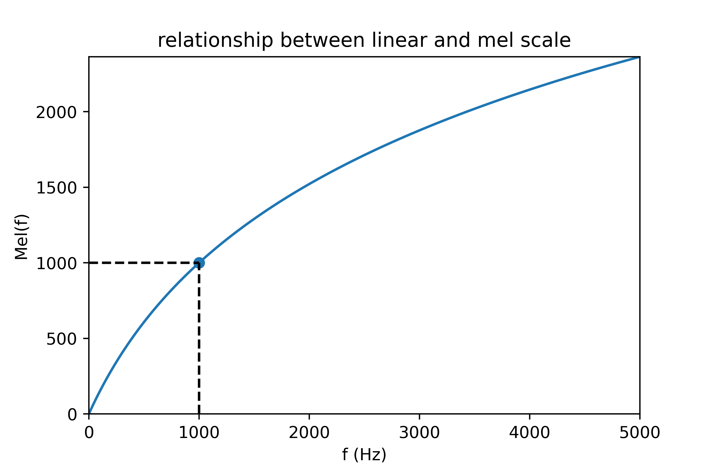
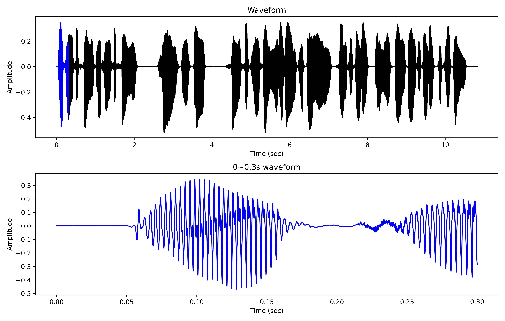
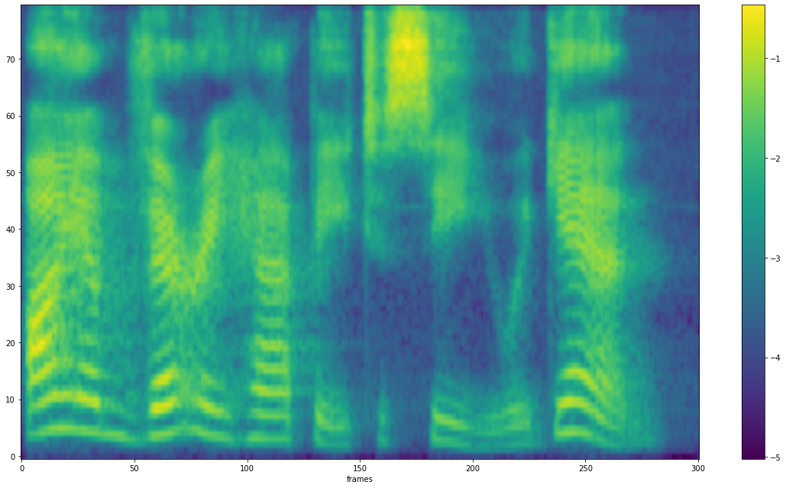
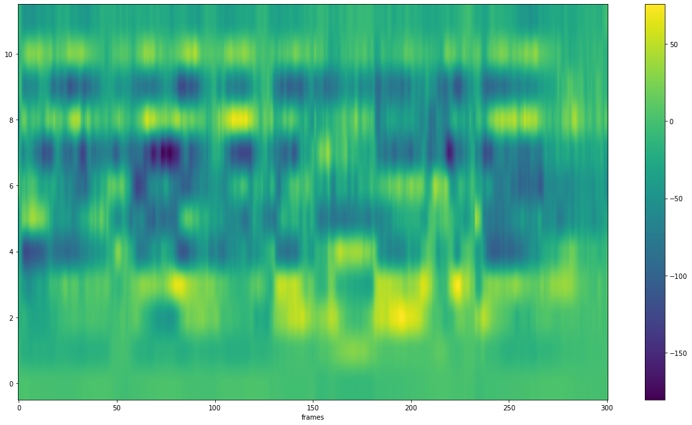

语音特征提取
原始信号是不定长的时序信号，不适合作为机器学习的输入。因此一般需要将原始波形转换为特定的特征向量表示，该过程称为语音特征提取。
预处理
包括预加重、分帧和加窗。
预加重
语音经过说话人的口唇辐射发出，受到唇端辐射抑制，高频能量明显降低。一般来说，当语音信号的频率提高两倍时，其功率谱的幅度下降约6dB，即语音信号的高频部分受到的抑制影响较大。在进行语音信号的分析和处理时，可采用预加重（pre-emphasis）的方法补偿语音信号高频部分的振幅，在傅里叶变换操作中避免数值问题，本质是施加高通滤波器。假设输入信号第 \(n\) 个采样点为 \(x[n]\) ，则预加重公式如下：
其中， \(a\) 是预加重系数，一般取 \(a=0.97\) 或 \(a=0.95\) 。
分帧
语音信号是非平稳信号，考虑到发浊音时声带有规律振动，即基音频率在短时范围内时相对固定的，因此可以认为语音信号具有短时平稳特性，一般认为10ms~50ms的语音信号片段是一个准稳态过程。短时分析采用分帧方式，一般每帧帧长为20ms或50ms。假设语音采样率为16kHz，帧长为20ms，则一帧有 \(16000\times 0.02=320\) 个样本点。
相邻两帧之间的基音有可能发生变化，如两个音节之间，或者声母向韵母过渡。为确保声学特征参数的平滑性，一般采用重叠取帧的方式，即相邻帧之间存在重叠部分。一般来说，帧长和帧移的比例为 \(1:4\) 或 \(1:5\) 。
加窗
分帧相当于对语音信号加矩形窗，矩形窗在时域上对信号进行截断，在边界处存在多个旁瓣，会发生频谱泄露。为了减少频谱泄露，通常对分帧之后的信号进行其它形式的加窗操作。常用的窗函数有：汉明（Hamming）窗、汉宁（Hanning）窗和布莱克曼（Blackman）窗等。
汉明窗的窗函数为：
其中， \(0\leq n\leq N-1\) ，\(N\) 是窗的长度。
汉宁窗的窗函数为：
其中， \(0\leq n\leq N-1\) ， \(N\) 是窗的长度。
短时傅里叶变换
人类听觉系统与频谱分析紧密相关，对语音信号进行频谱分析，是认识和处理语音信号的重要方法。声音从频率上可以分为纯音和复合音，纯音只包含一种频率的声音（基音），而没有倍音。复合音是除了基音之外，还包含多种倍音的声音。大部分语音都是复合音，涉及多个频率段，可以通过傅里叶变换进行频谱分析。
每个频率的信号可以用正弦波表示，采用正弦函数建模。基于欧拉公式，可以将正弦函数对应到统一的指数形式：
正弦函数具有正交性，即任意两个不同频率的正弦波乘积，在两者的公共周期内积分等于零。正交性用复指数运算表示如下：
基于正弦函数的正交性，通过相关处理可以从语音信号分离出对应不同频率的正弦信号。对于离散采样的语音信号，可以采用离散傅里叶变换（DFT）。DFT的第 \(k\) 个点计算如下：
其中， \(x[n]\) 是时域波形第 \(n\) 个采样点值， \(X[k]\) 是第 \(k\) 个傅里叶频谱值， \(N\) 是采样点序列的点数， \(K\) 是频谱系数的点数，且 \(K\geq N\) 。利用DFT获得的频谱值通常是复数形式，这是因为上式中，
则
其中，
\(N\) 个采样点序列组成的时域信号经过DFT之后，对应 \(K\) 个频率点。经DFT变换得到信号的频谱表示，其频谱幅值和相位随着频率变化而变化。
在语音信号处理中主要关注信号的频谱幅值，也称为振幅频谱/振幅谱：
能量频谱/能量谱是振幅频谱的平方：
各种声源发出的声音大多由许多不同强度、不同频率的声音组成复合音，在复合音中，不同频率成分与能量分布的关系称为声音的频谱，利用频谱图表示各频率成分与能量分布之间的关系，频谱图横轴是频率（Hz），纵轴是幅度（dB）。
通过对频域信号进行逆傅里叶变换（IDFT），可以恢复时域信号：
离散傅里叶变换（DFT）的计算复杂度为 \(O(N^2)\)，可以采用快速傅里叶变换（FFT），简化计算复杂度，在 \(O(N\mathop{log}_2 N)\) 的时间内计算出DFT。在实际应用中，对语音信号进行分帧加窗处理，将其分割成一帧帧的离散序列，可视为短时傅里叶变换（STFT）：
其中， \(K\) 是DFT后的频率点个数， \(k\) 是频率索引， \(0\leq k< K\)。\(X[k,l]\) 建立起索引为 \(lL\) 的时域信号，与索引为 \(k\) 的频域信号之间的关系。
听觉特性
梅尔滤波
人类对不同频率的语音有不同的感知能力：
-
1kHz以下，人耳感知与频率成线性关系。
-
1kHz以上，人耳感知与频率成对数关系。
因此，人耳对低频信号比高频信号更为敏感。因此根据人耳的特性提出了一种mel刻度，即定义1个mel刻度相当于人对1kHz音频感知程度的千分之一，mel刻度表达的是，从线性频率到"感知频率"的转换关系：

人们根据一系列心理声学实验得到了类似耳蜗作用的滤波器组，用于模拟人耳不同频段声音的感知能力，也就是多个三角滤波器组成的mel频率滤波器组。每个滤波器带宽不等，线性频率小于1000Hz的部分为线性间隔，而线性频率大于1000Hz的部分为对数间隔。同样地，将梅尔频率转换到线性频率的公式为：
Bark滤波
声音的响度，反映人对不同频率成分声强/声音强弱的主观感受。响度与声强、频率的关系可以用等响度轮廓曲线表示。
人耳对响度的感知有一个范围，当声音低于某个响度时，人耳是无法感知到的，这个响度值称为听觉阈值，或称听阈。在实际环境中，但一个较强信号（掩蔽音）存在时，听阈就不等于安静时的阈值，而是有所提高。这意味着，邻近频率的两个声音信号，弱响度的声音信号会被强响度的声音信号所掩蔽（Mask），这就是频域掩蔽。
根据听觉频域分辨率和频域掩蔽的特点，定义能够引起听觉主观变化的频率带宽为一个临界频带。一个临界频带的宽度被称为一个Bark，Bark频率 \(Z(f)\) 和线性频率 \(f\) 的对应关系定义如下：
其中，线性频率 \(f\) 的单位为Hz，临界频带 \(Z(f)\) 的单位为Bark。
倒谱分析
语音信号的产生模型包括发生源（Source）和滤波器（Filter）。人在发声时，肺部空气受到挤压形成气流，气流通过声门（声带）振动产生声门源激励 \(e[n]\) 。对于浊音，激励 \(e[n]\) 是以基音周期重复的单位冲激；对于清音， \(e[n]\) 是平稳白噪声。该激励信号 \(e[n]\) 经过咽喉、口腔形成声道的共振和调制，特别是舌头能够改变声道的容积，从而改变发音，形成不同频率的声音。气流、声门可以等效为一个激励源，声道等效为一个时变滤波器，语音信号 \(x[n]\) 可以被看成激励信号 \(e[n]\) 与时变滤波器的单位响应 \(v[n]\) 的卷积：
已知语音信号 \(x[n]\) ，待求出上式中参与卷积的各个信号分量，也就是解卷积处理。除了线性预测方法外，还可以采用倒谱分析实现解卷积处理。倒谱分析，又称为同态滤波，采用时频变换，得到对数功率谱，再进行逆变换，分析出倒谱域的倒谱系数。
同态滤波的处理过程如下：
-
傅里叶变换。将时域的卷积信号转换为频域的乘积信号：
\[ {\rm DFT}(x[n])=X[z]=E[z]V[z] \] -
对数运算。将乘积信号转换为加性信号：
\[ {\rm log} X[z]={\rm log}E[z]+{\rm log}V[z]=\hat{E}[z]+\hat{V}[z]=\hat{X}[z] \] -
傅里叶反变换。得到时域的语音信号
倒谱。\[ Z^{-1}(\hat{X}[z])=Z^{-1}(\hat{E}[z]+\hat{V}[z])=\hat{e}[n]+\hat{v}[z]\approx \hat{x}[n] \]
在实际应用中，考虑到离散余弦变换（DCT）具有最优的去相关性能，能够将信号能量集中到极少数的变换系数上，特别是能够将大多数的自然信号（包括声音和图像）的能量都集中在离散余弦变换后的低频部分。一般采用DCT反变换代替傅里叶反变换，上式可以改写成：
其中，\(X[k]\)是DFT变换系数， \(N\) 是DFT系数的个数， \(M\) 是DCT变换的个数。
此时， \(\hat{x}[n]\) 是复倒谱信号，可采用逆运算，恢复出语音信号，但DCT不可逆，从倒谱信号 \(\hat{c}[m]\) 不可还原出语音 \(x[n]\) 。
常见的声学特征
在语音合成中，常用的声学特征有梅尔频谱（Mel-Spectrogram）/滤波器组（Filter-bank，Fank），梅尔频率倒谱系数（Mel-Frequency Cepstral Coefficient，MFCC）等。

接下来重点介绍FBank和MFCC的计算过程。
FBank
FBank的特征提取过程如下：
-
将信号进行预加重、分帧、加窗，然后进行短时傅里叶变换（STFT）获得对应的
频谱。 -
求频谱的平方，即
能量谱。进行梅尔滤波，即将每个滤波频带内的能量进行叠加，第 \(k\) 个滤波器输出功率谱为 \(X[k]\) 。 -
将每个滤波器的输出取对数，得到相应频带的对数功率谱。
\[ Y_{\rm FBank}[k]={\rm log}X[k] \]
FBank特征本质上是对数功率谱，包括低频和高频信息。相比于语谱图，FBank经过了梅尔滤波，依据人耳听觉特性进行了压缩，抑制了一部分人耳无法感知的冗余信息。
MFCC
MFCC和FBank唯一的不同就在于，获得FBank特征之后，再经过反离散余弦变换，就得到 \(L\) 个MFCC系数。在实际操作中，得到的 \(L\) 个MFCC特征值可以作为静态特征，再对这些静态特征做一阶和二阶差分，得到相应的静态特征。
具体操作
利用librosa读取音频

音频有不同的编码类型，librosa默认采取浮点格式读取，即读取的样本点均是 \([-1,-1]\) 之间的浮点值。更详细的文档参见SoX的Input & Output File Format Options部分。
| 选项 | 描述 | 常见可选项 |
|---|---|---|
| b | 每个编码样本所占的数据位数（位深） | 8/16/32 |
| c | 音频文件包含的通道数 | 1 / 2 |
| e | 音频文件的编码类型 | signed-integer/unsigned-integer/floating-point |
| r | 音频文件的采样率 | 16k/16000/22050 |
| t | 音频文件的文件类型 | raw/mp3 |
提取梅尔频谱

提取MFCC

在语音合成中，类似于深度学习其它领域，输入数据要进行均值方差归一化，使得数据量纲一致并遵循一定分布，避免模型梯度爆炸，降低学习难度：